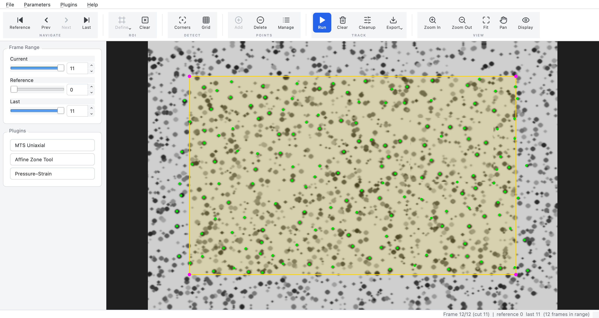
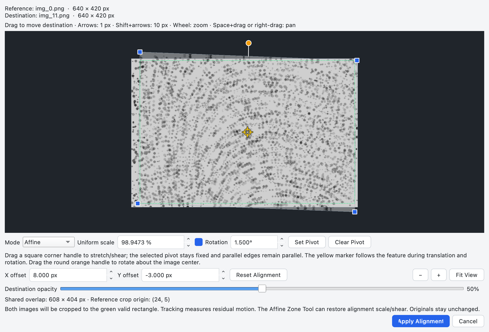

ECM Tracker
User manual
Track features through an image sequence, refine the results, and turn their motion into useful measurements.
Read the short workflows in order, or jump to a tool. Expand the reference panels for settings and data formats. Screenshots use demonstration data; click any image to inspect it at full resolution.
Jump to a section
01Quick start & workspace
A complete tracking run in five steps.
- Open your images.
Choose File → Open Directory… for a sequence, or Open Files… for selected images.
- Choose the range.
In the left Frame Range pane, set Reference and Last. Click the toolbar’s Reference button to show the starting image.
- Choose what to track.
Use ROI → Define → Rectangle and drag around the specimen. Click Corners to find features, or Grid to seed regular points.
- Run and inspect.
Click the blue Run button. Move Current through the sequence and use Cleanup to preview and remove poor tracks.
- Save your work, then export.
File → Save Trackers… preserves an editable tracking snapshot. The toolbar’s Export dropdown writes coordinates for analysis.
{kind=link}

Drag the divider beside the image to resize or collapse the left pane; drag it back to reveal the controls. Its width is remembered. Launch analysis tools from the pane’s Plugins buttons. The top Plugins menu manages installation and reloading.
02Images & frames
Open Directory… reads supported images directly inside a folder; Open Files… uses your selection. Both sort names numerically, so image_2 precedes image_10. Supported extensions are PNG, JPG/JPEG, BMP, and TIF/TIFF.
Ordinary sequences must have matching image dimensions. Color and grayscale images are normalized internally; tracking uses grayscale. For two differently sized images, use Open Image Pair…. MTS uses acquisition-log order instead of filename sorting.
Choose the tracking range
| Control | Purpose |
|---|---|
| Current | The displayed image. Browse freely, including outside the tracking range; tracked markers appear only inside that range. |
| Reference | The first tracked image. Define the ROI and seed points here. |
| Last | The final tracked image, included in the range. |
| Reference / Prev / Next / Last | Toolbar buttons jump to a range endpoint or step one image. The left/right arrow keys step while the image canvas has focus. |
Use either a slider or its number field. Frame controls use zero-based indices: 0 is the first loaded image. In the status bar, Frame 1/N is a human-readable count; cut 0 means the reference image within the tracked range.
Image validation and intensity conversion
Loading validates every image before replacing the sequence; you can cancel the progress dialog. Unreadable files or inconsistent dimensions prevent the new sequence from loading. Keep source images unchanged while working.
16-bit pixels are mapped to 8-bit by division by 257. Floating-point images in [0, 1] are scaled to [0, 255]; other floating values are clipped to that range. Alpha is discarded. This conversion is for display and tracking; originals are untouched.
03Image-pair alignment
Bring two images into a shared coordinate system before tracking their remaining motion.
- Choose File → Open Image Pair… and select the reference and destination images in that order.
- Drag the destination over the fixed reference. Adjust Destination opacity to compare matching features; 50% shows both.
- Choose a deformation mode, adjust alignment, then select Apply Alignment. Both images are cropped to the green valid-overlap rectangle.
- Continue with the normal ROI, detection, tracking, and cleanup workflow.
{kind=link}

| Control | How it works |
|---|---|
| Translation | Move the destination without changing its shape. Positive X moves right; positive Y moves down. |
| Uniform Scale | Use the scale percentage or square corner handles. Aspect ratio is preserved. |
| Affine | Drag square corner handles to adjust stretch and shear while keeping opposite edges parallel. The scale percentage preserves the current affine proportions. |
| Rotation | Enable the checkbox, then use the angle field or orange round handle. Positive angles rotate clockwise about the destination’s center. Disabling rotation remembers the angle. |
| Set Pivot / Clear Pivot | Translate a feature into place, choose Set Pivot, then click it on the destination. Scaling and affine adjustments hold that point fixed. Clear Pivot restores default anchoring without moving the image. |
| X / Y offset | Enter offsets in pixels, or use arrow keys on the alignment canvas for 1-pixel steps; Shift+arrow gives 10-pixel steps. |
| − / + / Fit View | Zoom out, zoom in, or fit both images. Wheel zoom and Space+drag or right-drag pan also work. |
| Reset Alignment | Clear offsets, deformation presets, rotation, and pivot. |
Without a pivot, corner dragging anchors the opposite corner; the scale percentage anchors the center. Each deformation mode remembers its settings. A selected pivot survives mode switches and follows its feature during translation and rotation. Escape cancels pivot picking; zoom and pan remain available.
Apply Alignment needs a nonempty valid overlap. Integer-only translation uses exact pixel crops; other transforms resample the original destination once. Source files are never changed.
Save or revise an alignment
File → Save Pair Setup… writes an .ecmpair.json file with source references and alignment, even before you seed points. Use Open Pair Setup… to restore it. Keep both originals; relative source paths let you move the setup and images together.
Parameters → Adjust Pair Alignment… reopens the original images. Cancel or unchanged geometry preserves your work. Applying changed geometry asks before clearing the ROI, points, tracking, and cleanup history. Pivot-only changes preserve tracking. Save the revised setup afterwards; save trackers separately.
Coordinate recovery and alignment correction
The cropped image’s upper-left pixel is (0, 0). To recover an original reference coordinate, add the saved crop origin. To recover an original destination coordinate, add the crop origin to its tracked coordinate and apply the inverse saved destination-to-reference alignment. Subtracting the offset alone is correct only for translation.
The Affine Zone Tool’s Include alignment affine maps if present is on by default. It restores alignment scale/shear in tables, curves, CSV, and the gauge, while excluding alignment translation and rigid rotation. Directions use restored, rotation-aligned axes; gauge arrows are mapped back to the aligned image. Turn it off to inspect residual deformation.
04Regions & feature points
A region of interest (ROI) limits automatic seeding. It is defined on the reference image and stays fixed in image coordinates; it does not follow the material.
Draw a region
On the reference image, open ROI → Define: Rectangle draws corner-to-corner; Circle draws from center to radius; N-Gon accepts left-clicked vertices and a right-click to close, with at least three vertices. Press Esc to cancel an unfinished region. The shortcuts R, C, and N also jump to Reference before drawing.
ROI → Clear removes the region and seed points, confirming before discarding a tracking result. Starting a replacement ROI also asks to discard existing tracking. Leaving the reference image cancels an unfinished ROI.
Seed and edit points
| Tool | Use |
|---|---|
| Corners | Detect strong image features within the ROI using Shi–Tomasi, or Harris if enabled in Parameters. Usually the best starting point for textured images. |
| Grid | Place regularly spaced points within the ROI, regardless of texture. Flat areas may not track reliably. |
| Add | Click to add individual seeds anywhere inside the image, even without an ROI. Available on Reference before tracking. |
| Delete | Click near a point to remove it. Before tracking this deletes a seed; after tracking it excludes a whole track from the active set. |
| Manage | Open Point Manager, select rows or click points on the image, then choose Delete selected. Selected points have red rings. |
Click Add or Delete again to leave that mode, or choose another tool. Running Corners or Grid replaces the seed set; it does not append points. Existing tracking must be discarded before detection replaces it. After redrawing the ROI, run detection again to replace old seeds with points in the new region.
In Point Manager, Ctrl-click (⌘-click on macOS) toggles individual selections; Shift-click selects a range. Before tracking it lists seeds; afterwards it lists active tracks with FB mean and the result’s LK quality measure. Lower photometric error is better; higher minimum eigenvalue is better.
Corner and grid parameters — all settings
Open Parameters → Corner Detection… or Grid…. Defaults below are the built-in values; saved defaults can override them.
| Setting | Default | Meaning |
|---|---|---|
maxCorners | 500 | Maximum detected points. Increase to allow more features. |
qualityLevel | 0.01 | Minimum corner quality relative to the strongest corner. Lower admits weaker features. |
minDistance | 7 px | Minimum separation between detected corners. |
blockSize | 7 px | Neighborhood used to evaluate corner quality. |
useHarrisDetector | Off | Switch from Shi–Tomasi to Harris detection. |
k (Harris) | 0.04 | Harris sensitivity coefficient; used only when Harris is enabled. |
spacing_x / spacing_y | 20 / 20 px | Horizontal and vertical grid spacing. Smaller spacing creates more points. |
OK uses changes in this session; Cancel leaves the session settings unchanged. Save as defaults separately writes the displayed values for future sessions, even if you subsequently cancel. Changing parameters does not regenerate points; run the detection tool again.
05Tracking & parameters
With at least one seed, click Track → Run. Pyramidal Lucas–Kanade (LK) follows points from Reference to Last, then tracks backward from Last to Reference. The backward pass checks consistency. Cancel stops the run without installing partial results.
Scrub Current to check that markers follow actual features. A failed point remains invalid for the rest of that pass; a visible marker does not guarantee a fully valid track. Track → Clear discards results and cleanup history after confirmation, but keeps the ROI and seeds.
Tracker parameters — all settings and tuning
Open Parameters → Tracker…. Changes affect the next run; they do not recalculate an existing result. OK, Cancel, and Save as defaults work as described in the parameter reference.
| Setting | Default | Meaning |
|---|---|---|
winSize (square) | 21 px | Width and height of the local tracking window. Larger windows include more texture but blend more local deformation. |
maxLevel | 3 | Highest image-pyramid level; 0 uses only the original resolution. More levels can accommodate larger inter-frame motion. |
criteria max iter | 30 | Maximum refinement iterations per pyramid level. |
criteria epsilon | 0.01 | Convergence threshold for a refinement step; smaller values demand tighter convergence. |
| Error measure | Standard LK error | Photometric mismatch (lower is better), or Minimum eigenvalue (higher is better). This determines which quality filters are available. |
minEigThreshold | 0.0001 | Reject insufficiently textured tracking windows using their minimum eigenvalue. |
Start with defaults. If points lose fast motion, try a larger window or more pyramid levels. If too few features exist, improve texture or adjust detection. Check the image and errors after every change; no threshold guarantees a correct track.
What the error measures mean
FB mean / FB max are the mean and maximum distances, in pixels, between forward and backward positions at matching valid frames. The final frame is excluded because it seeds the backward pass and its discrepancy is necessarily zero. These are consistency measures, not calibrated measurement uncertainty.
Photometric error describes image mismatch, not displacement in pixels. Its maximum and mean exclude the reference seed frame. In minimum-eigenvalue mode the quality value instead measures local trackability; the cleanup threshold uses the minimum over valid forward transitions. Unavailable or insufficiently supported measures may be infinite or invalid.
06Cleanup & undo
Open Track → Cleanup. Check a filter to enable it, then adjust its threshold while inspecting the live preview. A point must pass every enabled filter to survive.
{kind=link}
{kind=link}
Apply cleanup removes previewed outliers from the active set. Closing the dialog only dismisses the preview; it does not apply it or reverse changes already applied. Excluded points stay in the underlying result.
Undo last cleanup restores the preceding active set, including exclusions made by Delete, Point Manager, or RANSAC. Loosening a threshold does not bring points back; undo the exclusion instead. Undo history ends when results are cleared, replaced, or reloaded.
Every cleanup filter and control
| Filter | Keeps points with… |
|---|---|
| Forward / Backward status failures | No more than the allowed number of invalid frames in the respective pass. Zero requires validity throughout that pass. |
| Max / Mean OpenCV error | Forward photometric mismatch at or below the threshold. Available for standard LK error only. |
| FB mean / FB max error | Forward–backward discrepancy at or below the threshold, in pixels. |
| Distance (max single step) | Largest valid consecutive-frame displacement at or below the threshold, in pixels. This is not total displacement. |
| Minimum LK eigenvalue (keep ≥) | Minimum valid forward quality at or above the threshold. Available in minimum-eigenvalue mode only. |
| Drop points that leave image bounds | No valid forward position outside the image. |
| Drop points that leave ROI bounds | No valid forward position outside the fixed reference ROI. Without a completed ROI, this excludes nothing. |
Threshold is the cutoff. The max number box sets the slider’s scale, not a second filter; reducing it can clamp the threshold. Unchecked filters are ignored. Error-kind-incompatible filters are disabled.
Save parameters remembers the filters, thresholds, and scales for future cleanup dialogs. Reset thresholds returns to the dialog’s loaded defaults, or its most recently saved settings; without saved settings, filters start disabled. Reset does not undo applied exclusions.
07Viewing & display
The toolbar’s View group provides Zoom In, Zoom Out, Fit, Pan, and Display. A mouse wheel zooms around the pointer. Middle/right-drag pans; Pan mode or holding Space enables left-drag panning. Double-click fits the image.
On a trackpad, two-finger scrolling pans; Ctrl+scroll (⌘ on macOS) zooms. Native macOS pinch gestures also zoom. Right-click finishes a polygon or zone when its drawing tool is active, instead of panning.
Open Display for Show trackers, marker size (radius, 1–15 screen pixels), opacity (0–100%), Show window-size box, and Show ROI. The green boxes around tracked points show the LK window used by the result. Built-in defaults show markers and ROI, with size 3 and opacity 100%; window boxes are off.
Seeds are cyan; active, valid tracks are green, with short trails from their previous-frame positions. The ROI has a yellow outline. Red points indicate a cleanup/RANSAC preview; red rings indicate Point Manager selection.
Changes preview live; Cancel restores the prior display. Save as defaults persists the displayed settings separately. These controls change appearance, not tracking data.
08Save, reopen & export
Save trackers to continue working. Export coordinates to use elsewhere.
| Action | What it preserves |
|---|---|
Save Trackers….npz | Seeds, ROI, frame range/current frame, detection and tracker parameters, and—when available—the full tracking result and active mask. Can save seeds before tracking. Does not embed source images or undo history. |
Save Pair Setup….ecmpair.json | The pair’s original source references and alignment, including pivot. Does not save points or tracking. |
Export → NumPy.npy + companions | Active, fully forward-valid coordinates, with accompanying frame-range and identity data. |
Export → CSV.csv | One row per tracked frame, with its filename and interleaved x/y columns for retained points. |
To resume, open the same image sequence—or Open Pair Setup…—then choose File → Load Trackers…. Loading replaces current points/results after confirmation. The app checks frame count and, for current-format files, ordered image-content identity. A legacy file without identity information is explicitly reported.
The toolbar Export dropdown offers NumPy and CSV. File → Export… and its shortcut export NumPy. Only active points valid in every forward frame are exported; the exported count can be lower than the active count. No fully valid points means Export is disabled.
Coordinate formats, identities, and companion files
Coordinates are pixels, with origin at the upper-left pixel, x rightwards and y downwards. They are positions, not displacements or calibrated physical lengths. Frames run from Reference through Last inclusive; in pair mode they use the aligned crop’s coordinates.
| File | Layout |
|---|---|
coords.npy | float32 array shaped (frames, kept_points, 2); the last axis is x, y. |
coords.bundle.npz | Authoritative combined export: coords, original zero-based point_ids, and global frame_indices. This is an analysis export, not a reloadable tracker snapshot. |
sequence.txt | Global zero-based reference and last indices, separated by a space. A custom NumPy filename uses <stem>.sequence.txt; its bundle is <stem>.bundle.npz. |
coords.csv | filename,p1x,p1y,p2x,p2y,…; one row per frame, coordinates to six decimal places. Point labels are sequential export columns, not original point IDs. |
Retained points keep their original ordering. Save the NumPy bundle when you need original point identities. For recovering original pair-image coordinates, see coordinate recovery.
09Affine Zone Tool
Measure deformation in one or more areas of the tracked specimen.
- Launch Affine Zone Tool from the left pane. Choose New Zone; the main image jumps to Reference. Left-click at least three vertices.
- Right-click to finish a zone and immediately start another, or choose Finish Zone to finish and stop drawing. All Points Zone encloses all active tracked reference points; it needs at least three non-collinear points.
- Browse frames to read each zone’s Pts, principal stretches λ1 / λ2, and directions v1 / v2. Click its color cell to change the overlay/curve color.
- Use RANSAC… on a selected row to preview outliers, then Apply Cleaning if appropriate. Undo exclusions in the main Cleanup dialog.
- Open Plot Curves or Direction Gauge, or write per-frame results with Export CSV….
{kind=link}
{kind=link}
λ = 1 means unchanged length; above 1 means extension, below 1 contraction. The larger stretch is λ1. A homogeneous affine fit describes each zone; at least three well-spread valid points are needed. A failed fit is not a zero-strain measurement.
Curves use the zone color: solid for λ1, dashed for λ2. The gauge places the major/minor axes at each zone’s point centroid; axis lengths vary with stretch. Clear Zones removes all zones, not tracks. Zones remain when the tool is closed and reopened, but are cleared by a new sequence/reference, plugin reload, or app restart.
For image pairs, Include alignment affine maps if present restores scale/shear by default; see alignment correction. The setting affects all reported results, not tracking or RANSAC.
RANSAC settings, fit interpretation, and zone CSV
RANSAC identifies points inconsistent with one affine motion. Zone RANSAC uses the selected zone and Frame, synchronized with the main Current control. Selecting another table row updates the preview. Applying removes that zone’s outlier tracks from the app-wide active set; other zones sharing those points are affected.
| Setting | Default | Meaning |
|---|---|---|
| Points per fit | 6 | Points sampled for each candidate affine fit; allowed range starts at 3. |
| Reproj threshold (px) | 3 | Largest accepted distance between predicted and observed position. Lower is stricter. |
| Max iterations | 2000 | Upper limit on candidate fits. |
| Confidence | 0.99 | Target probability used to determine how many RANSAC trials to attempt. |
Reported deformation is a least-squares fit over the surviving valid points, not a continuously applied RANSAC fit. Zone membership is determined by reference positions. From the fitted linear map F, principal stretches and current-configuration directions come from B = F Fᵀ. Directions are axes: reversing an eigenvector’s sign does not change its physical direction; equal stretches have no unique principal orientation.
CSV columns are zone, frame_global, n_points, lambda1, lambda2, v1x, v1y, v2x, v2y. Zones start at 1, frames at 0. Rows without a valid fit are omitted. Default filenames distinguish residual analysis (zone_stretches.csv) from nontrivial restored alignment (zone_stretches_with_alignment.csv).
10MTS Uniaxial
Synchronize images with a tensile test, select a reference, then measure strain and stress.
Launch MTS Uniaxial from the left pane and work down its numbered sections. Start here when preparing an MTS experiment; the plugin loads the sequence and sets the main tracking range.
- Load experiment.
Choose the experiment root with Open…, check Images folder and Sensor file, then click Load. Defaults are
veddac/(images andVDCCam.log) andmts/specimen.dat. Browse buttons accept other locations. Images follow acquisition-log order. - Channels & temporal offset.
Choose force from clamp A, clamp B, or their average (default). Displacement always sums both clamps. The offset starts at 0 ms; positive values shift the sensor timeline later relative to images.
- Crop experiment window.
Set First sample and Last sample on the sensor timeline. The force–time and force–displacement plots update; Show image frames toggles image-time markers.
- Find reference.
Use Search from / Search to to limit the reference search within the crop, choose an algorithm, and click Detect reference. The nearest image becomes Reference; the crop end sets Last. Inspect the plotted marker and use Reference frame (override) if needed.
- Track in the main window.
Define an ROI, seed, run, and clean up normally. Reference force and displacement are recorded for zeroing; changing reference does not shift timestamps.
- Homogeneous RANSAC filtering.
Show outliers previews points inconsistent with a single reference-to-last affine map. Apply RANSAC excludes them; undo in Cleanup. Only points valid at both endpoints are judged. The four tuning controls use the same RANSAC definitions as the zone tool.
- Plotting.
Open Kinematics, Piola–Kirchhoff stress, Cauchy stress, or Direction gauge. Plots refresh with tracking/active-set changes; the gauge has an independent frame slider.
- Export aligned data & measures.
Export aligned data writes coordinates and synchronized sensor data. Select desired derived columns and click Export measures (CSV). Files are written into the experiment’s project folder.
{kind=link}
{kind=link}
Specimen and stress settings
Enter Width and Thickness in mm (defaults 10 and 0.5). The reference area is their product. Stress force basis selects either change from reference (default, removes preload) or absolute measured force (includes preload).
Enable Use measured loading axis (reference image) and enter its clockwise angle from image +x when that axis is known. Otherwise, the app assumes the largest principal stretch is axial—a tensile-test assumption. Stress plots use axial engineering strain on the horizontal axis.
Reference algorithms and synchronization details
| Algorithm | Reference selection |
|---|---|
| Force onset (5x baseline noise) | Detects the first force rise above a baseline-noise threshold in the selected search window. |
| Force-displacement knee (max curvature) | Finds the strongest curvature in the force–displacement curve. |
| Set preforce | First sample strictly above Pre-force threshold (default 0.100 N). Other algorithms ignore this field. |
| Elastic-energy minimum (spring-hinge fit) | Fits a spring-hinge model and finds its minimum stored elastic energy. Needs at least 20 samples; too few samples or a failed/degenerate fit returns the search window’s first sample. Inspect the result. |
Onset, knee, and preforce require at least three finite samples; searches with no identifiable onset, knee, or threshold crossing are reported in the status bar. Adjusting search sliders changes the next detection window; it does not apply a new reference until detection or override.
Sensor force/displacement are linearly interpolated at logged image times after adding the offset to sensor times. Frames outside sensor coverage use the nearest endpoint and are flagged in_range = 0. A reference outside coverage is rejected. Verify synchronization before interpreting stress.
Measures, units, and export columns
One affine fit per frame uses all active, valid points. Principal engineering strains are ε₁ = λ₁ − 1 and ε₂ = λ₂ − 1; they are dimensionless (0.05 = 5%). Nominal first Piola–Kirchhoff stress is P = force / A₀, in MPa (N/mm²). With incompressibility, Cauchy stress is σ = axial stretch × P. The equal-transverse prediction is ε₂ = axial stretch^(−1/2) − 1.
Kinematics plots principal strains over time and ε₂ versus ε₁. Stress plots use the chosen force basis and axial stretch; when a loading axis is supplied it determines axial stretch rather than assuming λ₁. Plot toolbars offer view reset/history, pan, zoom, plot configuration, and image saving; Refresh redraws current data.
| Export | Contents |
|---|---|
| Aligned data | In the project’s export-<id>/ subfolder: tracked_coords.npy, active, fully forward-valid coordinates shaped (frames, points, 2); point_indices.npy, original point IDs; and aligned_data.csv, with frame_global, image_time_ms, displacement, force, in_range. Force and displacement here are always reference-zeroed. |
| Measures CSV | Always includes frame_global, time_s, in_range. Select lambda_1, lambda_2, eps_1, eps_2, eps_2_ico, pk_stress_MPa, cauchy_stress_MPa, force_N, displacement_mm, angle_deg, n_points. Force follows the selected stress force basis; displacement is reference-zeroed. |
| Measures diagnostics | Always appended: force_basis, loading_axis_deg, fit_reason, fit_rms_px, axial_lambda. The loading-axis field records its angle or major_tensile_assumption. Undefined numeric measures are nan. |
Plots and measures use time_s relative to Reference; aligned data retains the logged image_time_ms. Forces are in N, displacement in mm, stress in MPa. Direction angles use image axes. The gauge shows principal axes, even when a separate measured loading axis is used for stress. A small or degenerate point set can prevent a fit; inspect fit diagnostics rather than treating missing values as zero.
Automatic saving, reopening, and invalidation
The plugin creates <experiment root>/mts_uniaxial_project/. Reopen the same root and click Load; choose Yes to resume or No to start fresh and overwrite the prior project.
The folder contains manifest.json, image_log.csv, sensor_raw.csv, sync_params.json, crop.json, reference.json, and, after tracking, trackers.npz. Each aligned export gets an export-<id>/ subfolder; the manifest’s export_generation identifies the current completed export. measures.csv is written directly in the project folder.
Keep the original source data available and unchanged. Saved tracking and the active mask are restored when available; cleanup history is not. Legacy projects without source provenance require reference selection and tracking again.
Editing an upstream step invalidates dependent results and removes stale step files. Changing channels/offset or crop requires a new reference; a changed tracking range invalidates tracking. Cleanup and RANSAC changes persist the active mask and invalidate exports, including while the plugin window is hidden. Old export subfolders can remain; use only the generation identified by the current manifest. Applying a reference with the same tracked range can preserve tracking but invalidates exports.
Width, thickness, force basis, loading axis, and incompressibility preserve tracking but invalidate prior derived-measures exports. Re-export after changing them. Errors saving project files are reported; resolve them before relying on automatic persistence.
11Pressure–Strain
Load images in the main window, launch Pressure–Strain, then click Load CSV…. The pressure file must contain numeric Elapsed_s and Raw_mbar columns. Run tracking and cleanup in the main window.
Choose ε₁, ε₂, or their mean in Strain. Enable Shift pressure at first plotted frame to zero to subtract the pressure at Reference. Click Plot or Export CSV…; both use the current selection and zeroing. At least three suitable active points are needed for homogeneous strain fitting.
Input requirements, interpretation, and CSV output
Provide at least two finite CSV rows with nondecreasing elapsed times and a positive total duration. Repeated timestamps are consolidated: interior pressures are averaged, while the first and final readings anchor the endpoints. Image timestamps must also be nondecreasing in loaded order, with at least two images and a positive total time span.
Strains use the same homogeneous affine/principal-stretch analysis: ε = λ − 1. The mean is (ε₁ + ε₂) / 2, not area strain. Strain is dimensionless; pressure is mbar. Invalid fits produce gaps, not zero strain. In image-pair mode these are residual strains.
Export includes one row per tracked frame: frame_global, image_filename, image_elapsed_s, pressure_mbar, strain, strain_mode, pressure_zeroed, n_valid_points, provenance_json. Invalid strain cells are blank. The first row’s provenance records synchronization/source information. Image elapsed time is measured from the first loaded image. Changing cleanup or controls refreshes an open plot; changing the sequence clears loaded pressure data.
12Plugin management
Use the left pane’s buttons to launch installed plugins. Plugins → Open Plugins Folder… opens the writable user-plugin directory. Place a plugin folder there, then select Reload Plugins. User folders with the same name override bundled plugins.
Reload closes plugin windows and discards their in-memory state before rediscovery. A disabled plugin button with a warning has failed to load; hover for the error. The separately shipped plugins/ or bundled_plugins/ folder contains the developer guide, plugin-api.html, and SDK example for authors.
Help → View Help (F1) opens this offline manual in your browser. Help → About… shows application information. Use File → Quit to exit; macOS may place About/Quit in the application menu.
13Shortcuts & gestures
Use ⌘ on macOS wherever Ctrl appears below. Navigation keys act on the focused control; click the image first for canvas shortcuts.
| Shortcut | Action / context |
|---|---|
| Ctrl + O | Open directory. |
| Ctrl + S / L | Save / load trackers. |
| Ctrl + E | Export NumPy coordinates. |
| Ctrl + Q | Quit. |
| Ctrl + + / − / 0 | Zoom in / out / fit the main image. Double-click also fits. |
| ← / → | Previous / next image when the main canvas has focus. |
| N / R / C | Jump to Reference and begin polygon / rectangle / circle ROI. |
| Esc | Cancel an unfinished ROI; in alignment, cancel pivot picking (otherwise cancel the dialog). Does not universally cancel plugin drawing. |
| Space + drag | Temporary pan on the main or alignment canvas. |
| Ctrl-click / Shift-click | Toggle selection / extend a row range in Point Manager, including selection through the image. |
| Arrow / Shift + arrow | Move destination 1 / 10 px on the alignment canvas. |
| F1 | Open help. |
Mouse reminders: wheel to zoom; middle/right-drag to pan in the main view; right-drag or Space+drag in alignment. Right-click closes an ROI polygon; in Affine Zone Tool it closes the zone and continues drawing. Use Finish Zone to stop.
In this manual, Expand all references exposes technical details for your browser’s Find command (Ctrl+F / ⌘+F). Printing automatically includes reference panels.
14Troubleshooting & terms
| Symptom | What to check |
|---|---|
| Define, Corners, or Grid is unavailable | Load images. Define requires the reference image; Corners and Grid require a completed ROI and always detect on Reference. Add can seed manually without an ROI. |
| Run or Export is unavailable | Run needs seeds. Export needs at least one active point valid throughout the forward pass. Undo excessive filtering or improve and rerun tracking. |
| Reference / Last is locked | A tracking result exists. Save it, then use Track → Clear. |
| Markers disappeared | Check Show trackers and opacity; display a frame within the tracked range. Seeds appear only at Reference. Failed/excluded points may be hidden. |
| Image load fails | Check supported formats, readable files, and matching dimensions. Use pair mode for two differently sized images. If files changed on disk, reopen and retrack. |
| Trackers or pair setup will not reopen | Open matching original images in the same order. Restore missing sources; ensure pair geometry matches. An identity mismatch prevents loading unrelated data. |
| Cleanup changed nothing | Enable a filter, tighten its threshold, and apply. Changing max only adjusts scale. To restore excluded tracks, undo; resetting thresholds is different. |
| Zone / strain result is missing | Use at least three non-collinear valid points, and enough points for the chosen RANSAC sample size. Check the selected zone and frame. Missing/NaN results are not zero deformation. |
| MTS cannot find a reference | Check channel, offset, crop, search window, and sensor coverage. For preforce, a sample must exceed the threshold. Inspect detection and use override when appropriate. |
| Pressure alignment fails | Check required CSV columns, finite ordered times, and increasing image modification times. A copied set with identical timestamps has no usable timing span. |
| A plugin button is disabled | Read its error tooltip; check installation and reload. A plugin’s internal controls may instead be waiting for images, a reference, tracking, or enough valid points. |
Small glossary
- Seed / track
- A seed is a reference-image point. A track is its sequence of measured positions.
- Active / valid
- Active means not excluded by cleanup. Valid means successfully tracked at a particular frame. Exports require both active and forward-valid at every frame.
- Global / cut frame
- Global counts from the first loaded image. Cut counts from Reference. Both begin at zero.
- ROI / zone
- The ROI limits automatic seeding. A zone groups tracked points for local deformation analysis; it does not create tracks.
- Affine / homogeneous
- A single linear deformation plus translation describing a group of points. It approximates uniform deformation over that group.
- Stretch / strain
- Stretch is a length ratio λ. Engineering strain is λ − 1; a stretch of 1.05 corresponds to strain 0.05 (5%).
- RANSAC
- Repeated candidate fits identify points inconsistent with the chosen motion model. A real local deformation may also be an outlier to that model.
- Residual motion
- Motion remaining after manual pair alignment. Restoring alignment deformation is a separate analysis choice.